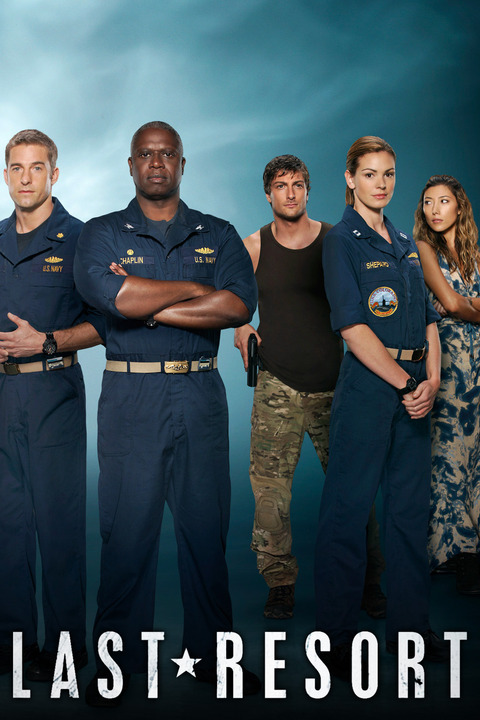

Last Resort (Aired 2012-2013)
Rating: 7.5/10
Age Restriction: TV-14
A US sub picks up Navy SEALS orders to launch a nuke. The captain refuses the order to fire. After escaping an attack from another US sub, the crew and SEALS take refuge on a small island.
Creators: Karl Gajdusek, Shawn Ryan
Cast
Andre Braugher as .... Captain Marcus Chaplin
Scott Speedman as .... XO Sam Kendal
Daisy Betts as .... Lieutenant Grace Shepard
Camille De Pazzis as .... Sophie Girard
Dichen Lachman as .... Tani Tumrenjack
Daniel Lissing as .... James King
Sahr Ngaujah as .... Julian Serrat